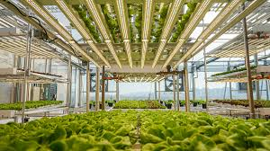

Produção local de alimentos
Oferecem acesso a frutas e vegetais frescos.
🌱 Fazenda Urbana Sustentável
A Eco Verde é uma fazenda urbana dedicada à produção sustentável de alimentos. Frutas, verduras e ervas frescas, sem agrotóxicos, direto da nossa fazenda para a sua mesa.
Alimentos cultivados localmente são mais frescos, nutritivos e contribuem para um planeta mais sustentável.
A Eco Verde é uma fazenda urbana dedicada à produção sustentável de alimentos no coração da cidade. Nosso objetivo é oferecer alimentos frescos, cultivados de forma ecológica, enquanto promovemos uma conexão da comunidade com a natureza e com práticas sustentáveis.

As fazendas urbanas são fundamentais nas cidades modernas. Aqui estão os principais motivos para implementar uma:
Oferecem acesso a frutas e vegetais frescos.
Conectam as pessoas com nutrição e natureza.
Reduzem emissões de carbono ao diminuir longas distâncias no transporte.
Promovem ambientes mais verdes e convívio entre os moradores.